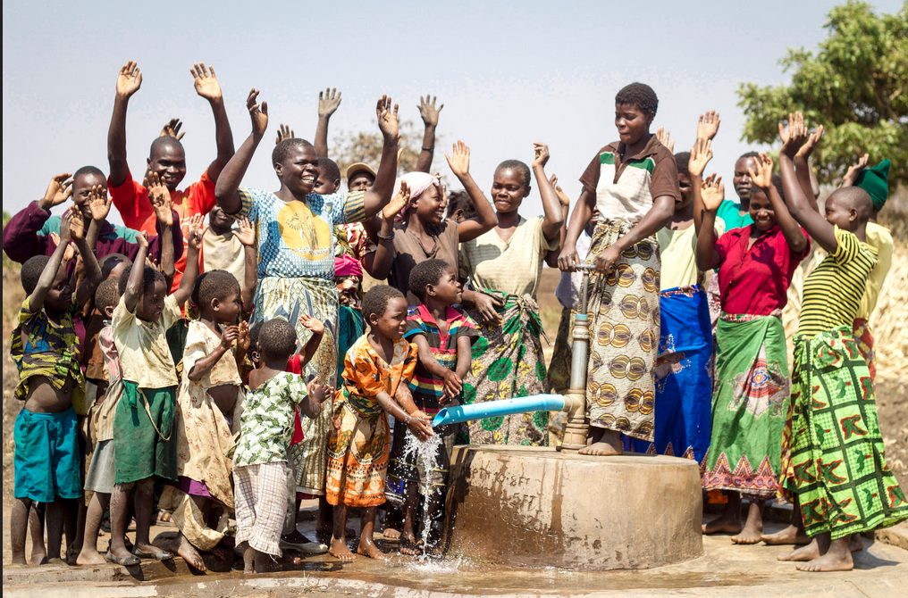
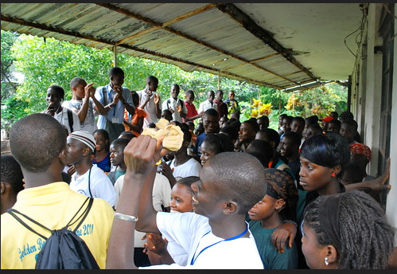

More Website Templates @ TemplateMonster.com - September22, 2014!
Global Mission

Local Outreach
-
1
Mentorship Program: Become a mentor in our Mentorship Program, designed to empower youth in our community. By sharing your time and experiences, you can help guide them towards their goals, fostering personal growth and positive life choices.
Read More
-
2
Neighborhood Clean-Up: Participate in our Neighborhood Clean-Up to beautify our community and foster pride in our surroundings. By working together, we can make a visible difference, strengthen relationships, and promote a cleaner, healthier environment for everyone.
Read More
-
3
Community Food Drive: Join us in our Community Food Drive to support local families in need. Together, we can collect non-perishable food items and create care packages that bring hope and nourishment to those facing food insecurity in our neighborhood.
Read More
International Mission

Engage in our Water and Sanitation Projects to bring clean drinking water and sanitation facilities to communities in need. Access to safe water is vital for health, and our efforts aim to reduce disease and improve quality of life globally.

Join our Medical Missions to provide essential healthcare services in underserved communities worldwide. Volunteers, including medical professionals and support staff, deliver treatments, education, and hope, making a significant impact on health and well-being in vulnerable populations.
Support our Education Outreach initiatives that focus on providing quality education in developing countries. By partnering with local schools and organizations, we aim to equip children with the skills they need to break the cycle of poverty and build brighter futures.
Change the World by Supporting Our
Mission Today